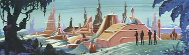
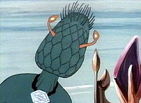
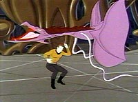
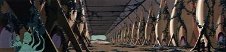
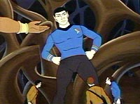
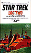

|
MANCHETE
DO EPISDIO
Desenho
animado traz tona conceitos
de eugenia e polmica de clonagem
Episdio
anterior | Prximo episdio Sinopse:
Data Estelar: 5554.4.
A Enterprise visita o recm-descoberto planeta Phylos,
e um grupo de descida encontra uma cidade abandonada na superfcie. Enquanto estudam
as construes, Sulu pega uma planta e envenenado. 
O dr. McCoy luta desesperadamente para salv-lo, mas no obtm bons resultados.
Durante o atendimento mdico, uma criatura aliengena se aproxima e se oferece
para salvar a vida de Sulu. Sem opes, o capito Kirk autoriza o procedimento,
que acaba sendo bem-sucedido.
O Phylosiano, de nome Agmar, tem a fisiologia
de uma planta inteligente. Ele conta que o veneno que afetou Sulu foi trazido
acidentalmente ao planeta por um visitante, que logo depois trabalhou para encontrar
a cura. Os Phylosianos chamam esse visitante de "Mestre" e "Salvador".
O grupo de descida descobre que esse visitante na verdade o cientista terrqueo
da poca das Guerras Eugnicas, Starros Keniclius, que j teria morrido. Agora
um clone gigante do dr. Keniclius, chamado Keniclius 5, tomou seu lugar.
O gigante deseja clonar Spock para criar um exrcito pacifista intergalctico,
para impor a paz sobre os outros povos. Kirk tenta convenc-lo de que o Universo
j se tornou um conglomerado de mundos pacficos dentro da Federao, mas Keniclius
5 prossegue com seu plano, levando Spock perto da morte durante o processo.
 Kirk
percebe que o nico meio de salvar Spock lembrar o clone de certos aspectos
da filosofia Vulcana --mostrando que um exrcito clonado de Spocks e a destruio
do original iam contra o conceito IDIC (Infinita Diversidade em Infinitas Combinaes).
Diante da persuaso do capito, o Spock gigante salva a vida do original por meio
de uma unio de mentes. O clone decide permanecer no planeta com Keniclius para
revitalizar a civilizao Phylosiana. Comentrios:
"The Infinite Vulcan"
uma histria interessante, embora acabe se tornando um pouco repetitiva --o
que, em um episdio de 23 minutos, uma coisa grave. Duas ou trs perseguies
do grupo de descida por plantas voadoras, longos dilogos entre Kirk e os diferentes
Spocks e o discurso de Keniclius deixam a audincia com uma sensao de dja vu.
 Tambm
de causar estranhamento a atitude dos Phylosianos --que ora parecem pacficos,
ora viles abominveis. Essa troca sbita de personalidade no favorece em nada
a caracterizao dos personagens, embora seja possvel explicar seus comportamentos.
Eles no eram maus de fato, s compartilhavam das mesmas idias de imposio da
paz e de eugenia que o dr. Keniclius.
Finalmente, tambm no h nenhuma
boa explicao para o fato de os clones serem gigantes. Provavelmente a caracterstica
foi acrescentada para tornar os seres mais ameaadores e poderosos --uma imagem
que se no realista, ao menos influencia no julgamento feito pelo pblico infantil.
Afinal, este um desenho animado a ser exibido nas manhs de sbado!
Tirando esses pormenores, trata-se de um belo enredo, que toca em temas interessantes,
como clonagem e eugenia. A discusso est mais atual do que nunca, com cientistas
anunciando polmicos projetos para clonar seres humanos, e seguramente no pertence
a um desenho infantil. 
Alm disso, igualmente interessante a referncia que se faz s Guerras
Eugnicas, cujo subproduto mais conhecido o vilo Khan Noonien Singh. Trazer
esse elemento numa breve citao, alm de fazer um tremendo sentido, paga um belo
tributo srie original.
 Somando
todos esse elementos ao fato de que trata-se da nica contribuio de Walter Koenig
(Chekov) srie, podemos ver "The Infinite Vulcan" como um episdio
memorvel. Mas ele no chegaria nem perto do que a Srie Animada ainda
iria oferecer mais adiante.
Citaes:
Egmar - "To wait is to assure your friend's death.
I must proceed."
("Esperar garantir a morte de seu amigo.
Eu preciso prosseguir.")
McCoy - "Intelligent plants?!?"
("Plantas inteligentes?!?")
Kirk - "We already have
peace in the Federation. And it wasn't imposed, it was agreed upon."
("Ns j temos paz na Federao. E no foi imposta, foi feita em comum acordo.") Trivia:  Este episdio mencionou a raa dos Kzinti, em uma ligao para o futuro episdio
"The Slaver Weapon".
Este episdio mencionou a raa dos Kzinti, em uma ligao para o futuro episdio
"The Slaver Weapon".
O roteirista deste episdio, Walter Koenig, atuou na srie original como o alferes
Pavel Chekov. O ator tambm conhecido como Alfred Bester, um agente da Psi Corps
do seriado Babylon 5.
Neste episdio, plantas voadoras ameaam o grupo de descida da Enterprise. A animao
foi reutilizada pela Filmation para representar criaturas do episdio "The
Eye of the Beholder", em uma medida clara de conteno de despesas.
O episdio tem um erro
de produo: enquanto Spock est sendo mantido cativo na superfcie do planeta,
uma rpida tomada da ponte mostrou o Vulcano a bordo!
Ao contrrio do que diz a crena popular, em nenhum filme ou episdio de Jornada
o capito Kirk disse "Beam me up, Scotty". Entretanto, neste episdio
animado ele chegou bem perto, ao dizer: "Kirk a Enterprise. Beam us up, Scotty".
A planta Retlaw vista
nesse episdio foi batizada em homenagem ao roteirista do episdio ("Retlaw"
"Walter" ao contrrio).

"The Infinite Vulcan" foi novelizada por Alan Dean Foster no
livro "Star Trek Log Two", publicado pela Ballantine Books em setembro
de 1974. Tambm neste livro h novelizaes dos episdios "The Survivor"
e "The Lorelei Signal".
Ficha
tcnica: Escrito por
Walter Koenig
Dirio de Hal Sutherland
Exibido em 20/10/1973
Produo: 02 Elenco:
William Shatner como James Tiberius Kirk
Leonard
Nimoy como Spock
DeForest Kelley como Leonard McCoy
James
Doohan como Montgomery Scott
George Takei como Hikaru Sulu
Nichelle Nichols como Uhura
Elenco convidado:
James Doohan como tenente Arex
James Doohan como dr. Keniclius
James Doohan como Agmar
James Doohan como Morgan
James
Doohan como Kolchek
Nichelle Nichols como a voz do computador
Episdio
anterior | Prximo episdio
|